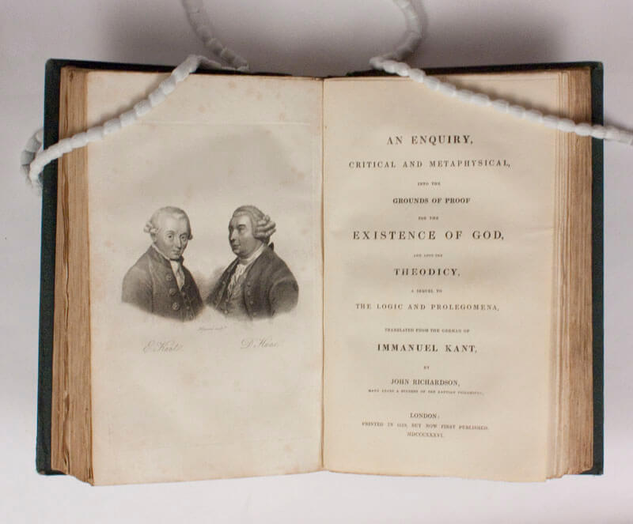

chapter5.2--handout
Background Information
Immanuel Kant (伊曼努尔·康德)
So I stared at it, like Kant at his church steeple, for half an hour. （于是我盯着它看了半个小时，好像康德盯着他的教堂尖塔一样。）
伊曼努尔·康德（1724-1804），德国哲学家。康德是启蒙运动（The Enlightenment）时期最后一位主要哲学家，是德国思想界的代表人物。他调和了勒内·笛卡尔（René Descartes）的理性主义与弗朗西斯·培根（Francis Bacon）的经验主义，被认为是继苏格拉底、柏拉图和亚里士多德后，西方最具影响力的思想家之一。
康德有其自成一派的思想系统，并且有为数不少的著作，其中核心的三大著作被合称为“三大批判”，即《纯粹理性批判》、《实践理性批判》和《判断力批判》，这三部作品有系统地分别阐述他的知识学、伦理学和美学思想。
《纯粹理性批判》尤其得到学术界重视，标志着哲学研究的主要方向由本体论转向认识论，是西方哲学（Western philosophy）史上划时代的巨著，被视为近代哲学的开端。此外，康德在宗教哲学、法律哲学和历史哲学方面也有重要论著。

康德又以思考时凝视教堂尖顶而闻名，所以此处尼克说他凝视尖顶思考就像康德一样。
Merton College (默顿学院)
As Gatsby closed the door of “the Merton College Library.” I could have sworn I heard the owl-eyed man break into ghostly laughter. （当盖茨比关上"默顿学院图书室"的门时，我可以发誓我听到了那个戴猫头鹰眼镜的人突然发出了鬼似的笑声。）
这里就是第三章提到过的图书馆了，尼克在得知盖茨比真的去过牛津大学以后，在这里也用了牛津藏书丰富的默顿学院来比喻。
默顿学院（Merton College, Oxford）位于牛津市墨顿街，是牛津大学最古老的学院之一，建立于1264年，以悠久的历史、出色的学术、丰富的藏书著称。
图书馆位于Mob Quad南侧和西侧的上层，原有的档案室仍在东北角；它拥有欧洲最完整的大学记录。
Vocabulary
distraught
adj. 忧心如焚的；心神错乱的（extremely upset and anxious so that you cannot think clearly）
原文：...and from this position his distraught eyes stared down at Daisy...
他那双显得心神错乱的眼睛从这个位置向下盯着黛西……
💧distraught 可以看成distracted的一种变体，两者在拉丁文中词源相同。distract指“分散注意力，使分心”，distracted也就是“心神错乱的”（very upset, unable to concentrate）, distraught同义。
💧常见搭配是distraught with, 比如：Distraught with grief, I signed away my rights to the property.
因为太过悲伤，我在恍惚中签字让出了我的财产权。
abound
vi. 充满；丰富，盛产（to exist in great numbers or quantities）
原文：Once more it was pouring, and my irregular lawn, well-shaved by Gatsby’s gardener, abounded in small, muddy swamps and prehistoric marshes.
此刻雨又下大了，我那片不成形的草地，虽然被盖茨比的园丁修剪得很整齐，现在却满是小泥潭和历史悠久的沼泽了。
💧abound 常和in或with搭配，表示“富于，有大量……”；注意abound是不及物动词，表示主动，不能写成be abounded with/in. 比如：Products abound and the people are happy. 物阜民康。
Crush Your Problems
- Gatsby, / his hands still in his pockets, / was reclining against the mantelpiece / in a strained counterfeit / of perfect ease, even of boredom.
盖茨比两手仍然揣在口袋里，正斜倚在壁炉架上，勉强装出一副悠然自得、甚至无精打采的神气。
💧表达精讲
①recline against 表示“向后倚靠”，recline即lie back, 比如reclining seat/chair也就是指“躺椅”；
②in a strained counterfeit “勉强装出……样子”；counterfeit作形容词表示“伪造的”，作名词指“伪造品”，这里指“装出……样子”（the act of assuming a false look of）. strained的原形strain表示“施加压力”，所以strained指“格外吃力的，勉强的”（done or produced with excessive effort）. - His eyes glanced momentarily at me, / and his lips parted / with an abortive attempt / at a laugh.
他瞥了我一眼，嘴唇张开想笑又没笑出来。
💧表达精讲
with an abortive attempt “尝试做但失败了”，abortive这个词我们在第一天详细学习过，表示“努力白费的，没有成功的”，这里an abortive attempt也就是“失败的尝试”。
💧知识拓展
这里再补充几种不同的“尝试”：
①同样表示“徒劳/失败的”
an unsuccessful attempt
a futile attempt
a doomed attempt
②“竭尽全力的”
a desperate attempt
③“孤注一掷的”
a last-ditch attempt - Luckily / the clock took this moment to tilt dangerously / at the pressure of his head,/ whereupon he turned / and caught it with trembling fingers, / and set it back in place.
幸好那架钟由于他的头的压力就在这一刻摇摇欲坠，他连忙转过身来用颤抖的手指把钟抓住，放回原处。
💧表达精讲
①the clock took this moment to tilt dangerously, take the moment to do “抓住时机做……”，这里形容钟仿佛是自己要倾斜下来的；
②at the pressure of “由于……的压力”；
③whereupon “马上，于是”（to say that one thing happens immediately after another thing, and usually as a result of it）;
④in place “在适当的地方”，set...back in place “放回原位”。 - I / had them both on their feet / with the desperate suggestion / that they help me make tea in the kitchen / when the demoniac Finn brought it in on a tray.
我急中生智，建议他们帮我到厨房里去预备茶，他们俩立刻站了起来，正在这时那魔鬼般的芬兰女佣人用托盘把茶端了进来。
💧表达精讲
①have one on one's feet 表示“使某人站起来”，have在这里是使役动词，be on one's feet也就是“站起来 ”（to be standing up）;
②with the desperate suggestion that... desperate表示“孤注一掷的”，这里指Nick以及无计可施了，只得提议……（that从句作suggestion的同位语）；
③demoniac “魔鬼般的”（relating to a demon）. - While the rain continued / it had seemed / like the murmur of their voices, / rising and swelling a little / now and then / with gusts of emotion.
刚才雨下个不停，仿佛是他们俩窃窃私语的声音，不时随着感情的迸发而变得高昂。
💧表达精讲
①rising and swelling 现在分词结构作voices的伴随状语，表示“（声音）高昂”；swell常见义是“肿胀”，这里指to become louder. 比如：Music swelled around us. 音乐声在我们四周越来越响。
②(every) now and then “偶尔，有时”，相当于(every) once in a while;
③with gusts of emotion “充满情绪地，情绪激动地”；gust原义指“狂风，暴雨 ”，比如：A sudden gust of wind blew the door shut. 一阵狂风把门吹得关上了。这里形容“（情感）突然发的迸发”（a sudden outburst），比如gust of laughter指“一阵狂笑”。
注意这时候Nick不在房子里，所以他只能根据雨势的变化来猜测Gatsby和Daisy的交谈情况。 - When he realized / what I was talking about, / that there were twinkle-bells of sunshine in the room, / he smiled like a weather man, / like an ecstatic patron of recurrent light, / and repeated the news to Daisy.
等他明白我说的是什么，又发觉屋子里阳光闪烁时，他像一个气象预报员又像一个欣喜若狂的回归光守护神似的露出了笑容，又把消息转报给黛西
💧句式拆解
这个句子含有省略了连词]的并列结构，我们可以还原一下：When he realized what..., (and) that ..., he smiled like..., (or) like an ecstatic patron..., and repeated...
what和that引导的都是realized的宾语从句
💧表达精讲
①twinkle-bells of sunshine “阳光像铃声般闪烁跳跃”，再一次出现通感（synesthesia）的手法（a combining of the senses）;
②like a weather man “像一个天气预报员”，这里指Gatsby把雨停的信息转述给Daisy（repeated the news to Daisy）;
③like an ecstatic patron of recurrent light “像一个见到阳光就欢欣雀跃的人”（巫宁坤版译文有误）；ecstatic指extremely happy and excited；patron指customer, 这里理解为a person who enjoys the services of light, “接受阳光馈赠的人”；recurrent指happening serveral times, “反复发生的”。
这句话非常拗口，其实这是Fitzegerald刻意不按照通俗直接的表达，而使用很多非常规的语言（unusual phrasing）. 作者借阳光的沐浴来暗示Gatsby心里感觉他和Daisy的关系也明亮了起来，所以心情很明朗欢快。
Content Analysis
在似乎激烈的一番谈话后（Nick没在房子里所以不知道具体发生了什么），Gatsby和Daisy之间的尴尬气氛缓解了不少。正好这时候天也放晴了，大家的心情都变得十分愉悦，于是Gatsby便主动提出邀请Daisy和Nick参观他的房子。但是在这之前，Gatsby的很多反应让大家都感觉到了难为情，这也暴露出了他在情感上其实非常不成熟，我们来回顾一下细节——
💧Clue 1:Gatsby is emotionally immature.
Evidence 1: “We haven’t met for many years,” said Daisy, her voice as matter-of-fact as it could ever be. “Five years next November.” "我们多年不见了。"黛西说，她的声音尽可能地平板。"到十一月整整五年。"
Gatsby对时间的精确让Daisy和Nick都瞠目结舌。Nick是这么形容的：The automatic quality of Gatsby’s answer set us all back at least another minute. "The automatic quality of Gatsby's answer"指Gatsby的回答就像是机器一样自动发出来的，而且让他和Daisy都愣了足足有一分钟的时间。
Gatsby一定是从和Daisy分开的那一天就开始算着时间，这种精确来自于他对Daisy持续而强烈的渴望，但他的这种浪漫落在现实里就变成了一种不合时宜。所以他在丝毫没有考虑场合以及此时Daisy的感受的情况下，就迫不及待地脱口而出，造成气氛极度尴尬。
Evidence 2: “You’re acting like a little boy,” I broke out impatiently. “Not only that, but you’re rude. Daisy’s sitting in there all alone.”
"你的行动像一个小孩，"我不耐烦地发作说，"不但如此，你也很没礼貌。黛西孤零零一个人坐在那里面。"
这一幕发生在Nick找借口逃离现场后，Gatsby一下无比慌张地跟着Nick来了厨房，结果引来了Nick的一番指责（平时看起来好好先生的Nick也被Gatsby气坏了），直接说他就像一个小孩（a little boy）. 虽然只是一个很小的细节，但其实也暗示了Gatsby自始至终的行为都有某种幼稚性。
从本书开篇，Nick都在强调Gatsby身上的理想主义特质：他一直在追求的只是一个虚无缥缈的梦，他的希望只是建立在对过去的美好幻想和怀缅上。因此在面对现实的时候，他往往无法认清当前的形势和条件，只是一心一意地按照自己的想法为人行事。而这样带来的后果一定是毁灭性的。
接下来我们看一看环境描写，尤其光的变化是如何反映人物情绪的——
💧Clue 2: The emotions of the characters are implied by the light.
Evidence 1: He literally glowed; without a word or a gesture of exultation a new well-being radiated from him and filled the little room.
他简直是光芒四射。虽然没有任何表示欣喜的言语姿势，一种新的幸福感从他身上散发出来，充塞了那间小屋子。
这时候Gatsby和Daisy已经结束了他们在屋子里的单独谈话，Nick看到的一幕是Daisy满脸泪痕，而Gatsby则仿佛全身都散发着光芒。可以猜想Gatsby向Daisy坦白了自己为她做的一切，并且当看到Daisy留下眼泪的时候，他就确定了Daisy一定对自己还心存念想，所以他瞬间充满了自信。
Evidence 2: “My house looks well, doesn’t it?” he demanded. “See how the whole front of it catches the light.”
"我的房子很好看，是不是？"他问道，"你瞧它整个正面映照着阳光。"
Gatsby带Daisy和Nick参观自己的房子的时候也是一副得意洋洋的样子，整个人都神清气爽起来，和之前的僵硬无措完全不同。所以这里不仅是指房子面朝阳光 ，同时暗示Gatsby的心里也是一片光明，充满了希望。
Today's Bonus
💧7 Things Men Do When They’re Truly In Love 男人为爱做的7件小事
“You’re acting like a little boy,” I broke out impatiently. （"你的行为像一个小孩，"我不耐烦地发作说。）
But there was a change in Gatsby that was simply confounding. He literally glowed. （但是盖茨比身上却发生了一种令人惶惑的变化。他简直是光芒四射。）
Gatsby再见到Daisy的时候，惶恐紧张不知所措地像个小孩；等尼克回到房间以后，Gatsby又变得光芒四射了。真的陷入爱情的男人会做什么“傻事”来向你表达呢？
- He loves and respects you for who you are
他尊重真实的你
When a man truly loves you, he loves all of you, not just your beauty. He loves you for who you are. He loves your flaws as well as your virtues. He respects your decisions and choices in life.
当一个男人真正爱你的时候，他爱的是你的所有，而不仅仅是你的外貌。他爱你的缺点，也爱你的优点。他尊重你生活中的决定和选择。 - He is your biggest cheerleader
他是你的头号啦啦队长
When a man loves you, he also wants you to be successful in whatever you choose to do. He is your biggest fan and most vocal cheerleader. He believes in you and what you can accomplish. He lets everyone know how awesome you are.
当一个男人爱你的时候，他也希望你无论做什么都能成功。他是你最忠实的粉丝，也是最直言不讳的啦啦队长。他相信你和你所能完成的事情。他想让每个人都知道你有多棒。
- He protects you
他会保护你
A man places himself between danger and that which he loves. He shields you not just from physical harm, but also emotional traumas. Always vigilant and always on guard, he is ready at a moment’s notice to place himself in harm’s way. He does not raise his hands against those he loves. It would never cross his mind.
男人把自己置于危险和他所爱的人之间。他不仅保护你不受身体伤害，也保护你不受精神创伤。他时刻保持警惕，时刻处于戒备状态，随时准备将自己置于危险之中。他永远不会攻击他所爱的人。 - He steps up
他会挺身而出
When times are tough or there is a tough decision to make, a man steps up and takes action. He does not shift the responsibility to others. He takes responsibility. He makes any sacrifice necessary. His personal comforts and safety are secondary considerations. When things go wrong, he takes the blame and the responsibility for making things right again.
当时局艰难或需要作出艰难决定时，男人会挺身而出，采取行动。他不把责任推卸给别人。他负责。他会做出任何必要的牺牲。他个人的安全才是次要的考虑因素。当事情出错时，他会承担责任，让事情重新回到正轨。
- He values your opinion
他重视你的想法
When a man loves you, your opinions matter to him. What you think the two of you should paint the bedroom matters to him. Your opinions on all things great and small are important to him.
当男人爱你时，你的意见对他很重要。你认为你们俩应该把卧室漆成什么样子对他很重要。你对大事小事的看法对他都很重要。 - He listens
他愿意倾听你
When you speak, he stops what he is doing to listen to you. What you have to say is important to him, even if it is trivial day-to-day stuff. He pays attention to you because you are the most important person in his world.
当你说话时，他会停下正在做的事听你说话。你要说的对他来说很重要，即使是日常琐事。他关注你是因为你是他很重要的人。 - He remembers
他记得
He remembers things like your favorite color, how you like your coffee or what types of books you are into. He remembers because you are important to him. It may seem trivial to you, but to him, you are the focus of his world. He is your biggest fan and remembering how you like your ice cream is just natural.
他会记得一些小事，比如你最喜欢的颜色，你喜欢的咖啡，或者说你喜欢什么类型的书。他记得这些是因为你对他很重要。对你来说，这似乎微不足道，但对他来说，你是他世界的焦点。他是你最忠实的粉丝，记住你有多喜欢冰淇淋是自然而然的。
盖茨比对黛西的爱是炽烈而执着的，他最终会抱得美人归吗？我们接着往下读哦~